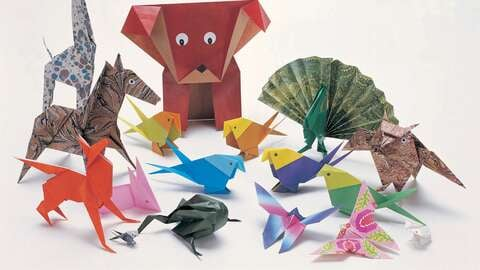
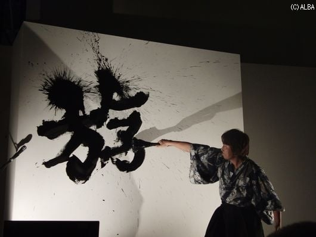
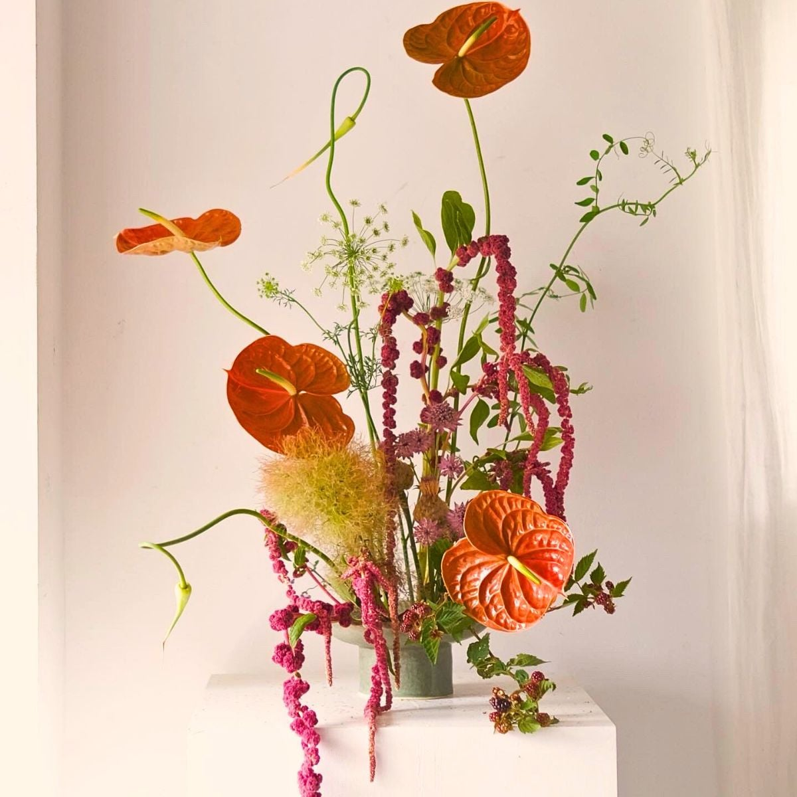
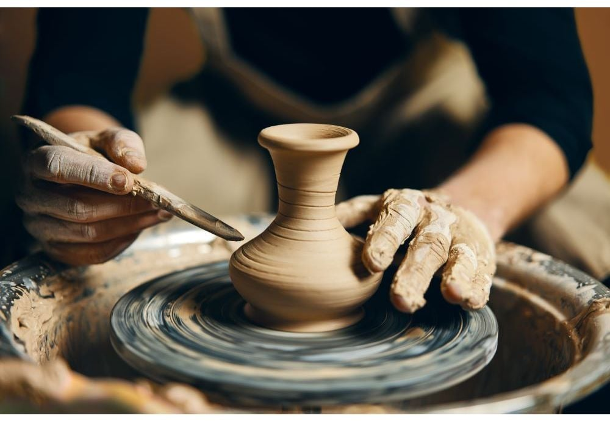
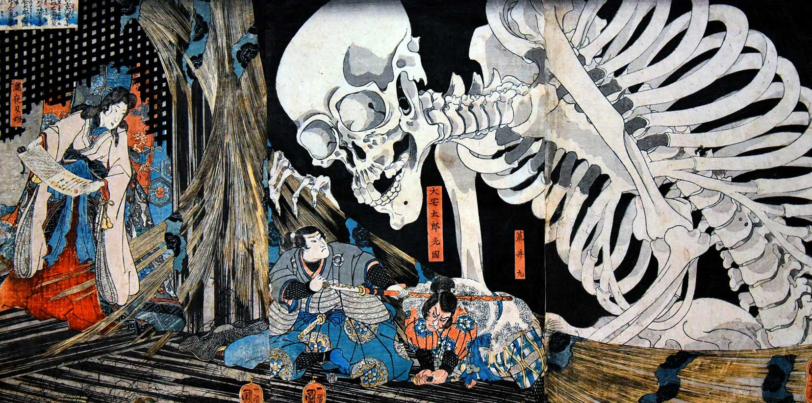
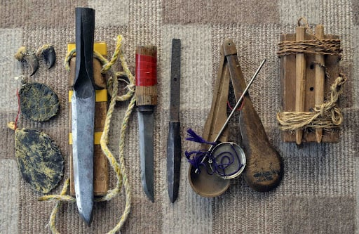
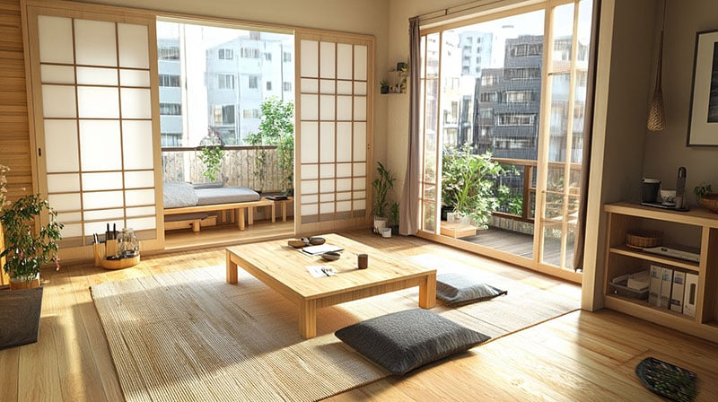
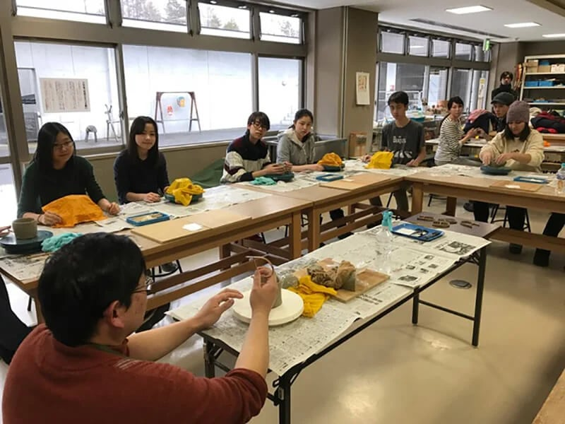

Japanese Arts & Crafts
Japanese arts and crafts showcase traditional skills, creativity, and respect for nature, passed down through generations and still practiced today From paper folding and calligraphy to pottery and flower arrangement, these crafts reflect Japan’s rich cultural heritage.
Popular Japanese Arts & Crafts
Origami

Origami is the traditional Japanese art of paper folding, creating animals, flowers, and symbolic designs without cutting or glue.
Calligraphy (Shodō)

Shodō is Japanese brush writing that focuses on balance, rhythm, and expressive strokes.
Ikebana

Ikebana is the art of flower arrangement, emphasizing harmony, simplicity, and the beauty of nature.
Pottery & Ceramics

Japanese pottery is known for handmade designs using clay and ceramic pieces used in daily life and tea ceremonies.
Ukiyo-e

Ukiyo-e are traditional woodblock prints showing landscapes, actors, and scenes from everyday life in historical Japan.
Arts & Crafts Traditions

Traditional Tools
Many crafts use tools that have been passed down through generations.

Natural Materials
Artists often use wood, clay, paper, and plants to reflect nature.

Hands-on Learning
Japanese crafts are learned through practice, workshops, and apprenticeships.
Modern Influence
Traditional techniques are combined with modern styles and designs.